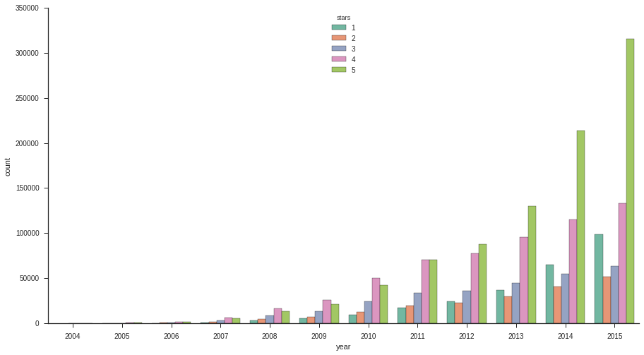
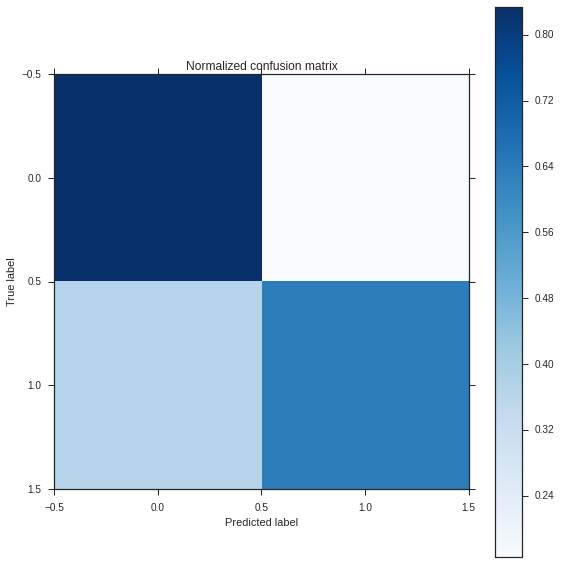

SOURCE: https://nbviewer.jupyter.org/github/xun-tang/pyladies_jupyter_demo/blob/master/Predict_Review_Five_Star_Rating.ipynb
Case study
Given a user’s past reviews on Yelp (available from yelp-challenge dataset),
When the user writes a review for a business she hasn't reviewed before,
How likely will it be a Five-Star review?
- Load data
- Visualize the data
- Featurize the data
- Join tables to populate the features
- Model the data: Logistic regression
- Evaluate the model
- Make prediction with the model
Load data
import pandas as pd PATH = '/scratch/xun/docs/yelp_dataset_challenge_academic_dataset/' biz_df = pd.read_csv(PATH + 'yelp_academic_dataset_business.csv') user_df = pd.read_csv(PATH + 'yelp_academic_dataset_user.csv') review_df = pd.read_csv(PATH + 'yelp_academic_dataset_review.csv')
review_df = review_df.set_index('review_id') user_df = user_df.set_index('user_id') biz_df = biz_df.set_index('business_id')
Visualize the data
Example: Plot distribution of review star ratings
import seaborn as sns %matplotlib inline # Set context to "talk" for figure aesthetics sns.set_context(context="talk") # set plot figure size to larger sns.set(palette='Set2', rc={"figure.figsize": (15, 8)}, style="ticks")
ax = sns.countplot(x='stars', data=review_df, hue='type') # Removing spines sns.despine()

Example: Plot review star ratings by year
review_df['datetime'] = pd.to_datetime(review_df['date']) review_df['year'] = review_df['datetime'].dt.year ax = sns.countplot(x='year', data=review_df, hue='stars') sns.despine()

Featurize the data
- Convert date string to date delta
- For example, business_age
- Convert strings to categorical features
- For example, noise level: quiet, loud, very loud.
- Drop unused features
- For example, business_name
def calculate_date_delta(df, from_column, to_column): datetime = pd.to_datetime(df[from_column]) time_delta = datetime.max() - datetime df[to_column] = time_delta.apply(lambda x: x.days) df.drop(from_column, axis=1, inplace=True)
def to_length(df, from_column, to_column): df[to_column] = df[from_column].apply(lambda x: len(x)) df.drop(from_column, axis=1, inplace=True)
def drop_columns(df, columns): for column in columns: df.drop(column, axis=1, inplace=True)
def to_boolean(df, columns): for column in columns: to_column = column+'_bool' df[to_column] = df[column].apply(lambda x: bool(x)) df.drop(column, axis=1, inplace=True)
FILL_WITH = 0.0
def to_category(df, columns): for column in columns: df[column] = df[column].astype('category') # add FILL_WITH category for fillna() to work w/o error if (FILL_WITH not in df[column].cat.categories): df[column] = df[column].cat.add_categories([FILL_WITH]) #print 'categories for ', column, ' include ', df[column].cat.categories
def category_rename_to_int(df, columns): for column in columns: df[column].cat.remove_unused_categories() size = len(df[column].cat.categories) #print 'column ', column, ' has ', size, ' columns, include ', df[column].cat.categories df[column] = df[column].cat.rename_categories(range(1, size+1)) #print 'becomes ', df[column].cat.categories
calculate_date_delta(df=review_df, from_column='date', to_column='date_delta')
to_length(df=review_df, from_column='text', to_column='text_len')
drop_columns(df=review_df, columns=['type', 'year', 'datetime'])
review_df.fillna(value=0.0, inplace=True)
calculate_date_delta(df=user_df, from_column='yelping_since', to_column='date_delta')
to_length(df=user_df, from_column='friends', to_column='friends_count')
to_length(df=user_df, from_column='elite', to_column='elite_count')
drop_columns(df=user_df, columns=['name', 'type'])
user_df.fillna(value=0.0, inplace=True)
drop_columns( df=biz_df, columns=[ 'type', 'name', 'city', 'full_address', 'state', 'categories', 'longitude', 'latitude', 'neighborhoods', 'hours.Monday.open', 'hours.Monday.close', 'hours.Tuesday.open', 'hours.Tuesday.close', 'hours.Wednesday.open', 'hours.Wednesday.close', 'hours.Thursday.open', 'hours.Thursday.close', 'hours.Friday.open', 'hours.Friday.close', 'hours.Saturday.open', 'hours.Saturday.close', 'hours.Sunday.open', 'hours.Sunday.close', ] )
to_cat_columns = [ 'attributes.Ambience.casual', 'attributes.Attire', 'attributes.Alcohol', 'attributes.Noise Level', 'attributes.Smoking', 'attributes.Wi-Fi', 'attributes.Ages Allowed', 'attributes.BYOB/Corkage', ] to_category( df=biz_df, columns=to_cat_columns, )
biz_df.fillna(value=FILL_WITH, inplace=True)
category_rename_to_int( df=biz_df, columns=to_cat_columns, )
Join tables to populate the features
Join three tables (review, biz, user) to one (review-with-all-info). Each join is a many-to-one join.
# The `user_df` DataFrame is already indexed by the join key (`user_id`). Make sure it's on the right side of join. review_join_user = review_df.join(user_df, on='user_id', lsuffix='_review', rsuffix='_user')
review_join_user_join_biz = review_join_user.join(biz_df, on='business_id', rsuffix='_biz')
drop_columns(df=review_join_user_join_biz, columns=['user_id', 'business_id'])
Identify data X and target y
Data X: all features we gathered from business, user, and review tables.
Target y: what we'd like to predict: Whether the review is Five-star or not.
# target y is whether a review is five-star y = review_join_user_join_biz.stars.apply(lambda x: x == 5) # We've already dropped not informative features data X X = review_join_user_join_biz review_join_user_join_biz.drop('stars', axis=1, inplace=True) # get the feature names - this will be useful for the model visualization and feature analysis features = X.columns.values
Split training set and testing set
from sklearn.cross_validation import train_test_split # Split the data into a training set and a test set X_train, X_test, y_train, y_test = train_test_split(X, y)
print 'training data shape', X_train.shape print 'test data shape', X_test.shape print 'converted label data shape', y_train.shape #print 'features', features
training data shape (1668909, 99) test data shape (556304, 99) converted label data shape (1668909,)
Model the data: Logistic regression
Logistic regression estimates the probability of a binary response based on one or more features.
Here we estimate the probability of a review being five-star.
from sklearn import preprocessing # Standardize features by removing the mean and scaling to unit variance scaler = preprocessing.StandardScaler().fit(X_train) X_train_scaled = scaler.transform(X_train) X_test_scaled = scaler.transform(X_test)
from sklearn.cross_validation import cross_val_score import numpy as np # Function used to print cross-validation scores def training_score(est, X, y, cv): acc = cross_val_score(est, X, y, cv = cv, scoring='accuracy') roc = cross_val_score(est, X, y, cv = cv, scoring='roc_auc') print '5-fold Train CV | Accuracy:', round(np.mean(acc), 3),'+/-', \ round(np.std(acc), 3),'| ROC AUC:', round(np.mean(roc), 3), '+/-', round(np.std(roc), 3)
from sklearn import linear_model # Build model using default parameter values lrc = linear_model.LogisticRegression()
from sklearn.cross_validation import StratifiedKFold # cross-validation cv = StratifiedKFold(y_train, n_folds=5, shuffle=True)
# print cross-validation scores training_score(est=lrc, X=X_train_scaled, y=y_train, cv=cv)
5-fold Train CV | Accuracy: 0.754 +/- 0.0 | ROC AUC: 0.824 +/- 0.001
Evaluation via Confusion Matrix
False positive (upper right).
False negative (bottom left)
# Compute confusion matrix import matplotlib.pyplot as plt from sklearn.cross_validation import train_test_split from sklearn.metrics import confusion_matrix def plot_confusion_matrix(cm, title='Confusion matrix', cmap=plt.cm.Blues): plt.imshow(cm, interpolation='nearest', cmap=cmap) plt.title(title) plt.colorbar() plt.tight_layout() plt.ylabel('True label') plt.xlabel('Predicted label') # Run classifier lrc_fit = lrc.fit(X_train_scaled, y_train) y_pred = lrc_fit.predict(X_test_scaled) cm = confusion_matrix(y_test, y_pred)
# Normalize the confusion matrix by row (i.e by the number of samples in each class) cm_normalized = cm.astype('float') / cm.sum(axis=1)[:, np.newaxis] print('Normalized confusion matrix') print(cm_normalized) plt.figure(figsize=(8, 8)) plot_confusion_matrix(cm_normalized, title='Normalized confusion matrix') plt.show()
Normalized confusion matrix [[ 0.83402455 0.16597545] [ 0.36468911 0.63531089]] /nail/home/xun/venv/ipynb/local/lib/python2.7/site-packages/matplotlib/collections.py:590: FutureWarning: elementwise comparison failed; returning scalar instead, but in the future will perform elementwise comparison if self._edgecolors == str('face'):

Make prediction with the model
Randomly pick an anonymous user from the dataset.
Example: Predict whether the user will give a business a Five-star rating.
def predict_given_user_biz(user, biz, biz_name): a_user = user.copy() a_biz = biz.copy() for column in { 'review_count', 'stars', }: a_biz[column+'_biz'] = a_biz[column] a_biz.drop(column, axis=1, inplace=True) for column in { 'date_delta', 'votes.funny', 'votes.useful', 'votes.cool', }: a_user[column+'_user'] = a_user[column] a_user.drop(column, axis=1, inplace=True) a_X_test = pd.concat([a_user.iloc[0], a_biz.iloc[0]], axis=0).to_frame().transpose() a_X_test['review_id'] = 'xun_on_postino-arcadia-phoenix' a_X_test = a_X_test.set_index('review_id') for column in { 'votes.cool_review', 'votes.funny_review', 'votes.useful_review', 'date_delta_review', 'text_len', }: a_X_test[column] = "" a_X_test[column] = '0.0' # XXX(xun): fix this a_X_test['attributes.BYOB/Corkage'] = 4 #a_X_test a_X_test_scaled = scaler.transform(a_X_test) a_y_pred = lrc_fit.predict(a_X_test_scaled) print 'prediction for user ', a_user.index.values[0], ' on business ', biz_name, ' is ', a_y_pred[0]
a_user = user_df[user_df.index == 'HcOguFNyg9jNkNpTBD2D3g'] a_user.review_count
user_id HcOguFNyg9jNkNpTBD2D3g 4 Name: review_count, dtype: int64
a_biz = biz_df[biz_df.index == 'SDwYQ6eSu1htn8vHWv128g']
https://www.yelp.com/biz/postino-arcadia-phoenix

predict_given_user_biz(user=a_user, biz=a_biz, biz_name="Postino Arcadia Phoenix")
prediction for user HcOguFNyg9jNkNpTBD2D3g on business Postino Arcadia Phoenix is True
another_user = user_df[user_df.index == 'o625WyBtvJ_G3s0FRr6RmQ'] another_user.review_count
user_id o625WyBtvJ_G3s0FRr6RmQ 10 Name: review_count, dtype: int64
another_biz = biz_df[biz_df.index == '1n0n_-Iz0e3iVpH8sereiA']
https://www.yelp.com/biz/port-authority-of-allegheny-county-pittsburgh

predict_given_user_biz(user=a_user, biz=another_biz, biz_name="Postino Arcadia Phoenix")
prediction for user HcOguFNyg9jNkNpTBD2D3g on business Postino Arcadia Phoenix is True
predict_given_user_biz(user=another_user, biz=another_biz, biz_name="Port Authority of Allegheny County")
prediction for user o625WyBtvJ_G3s0FRr6RmQ on business Port Authority of Allegheny County is False